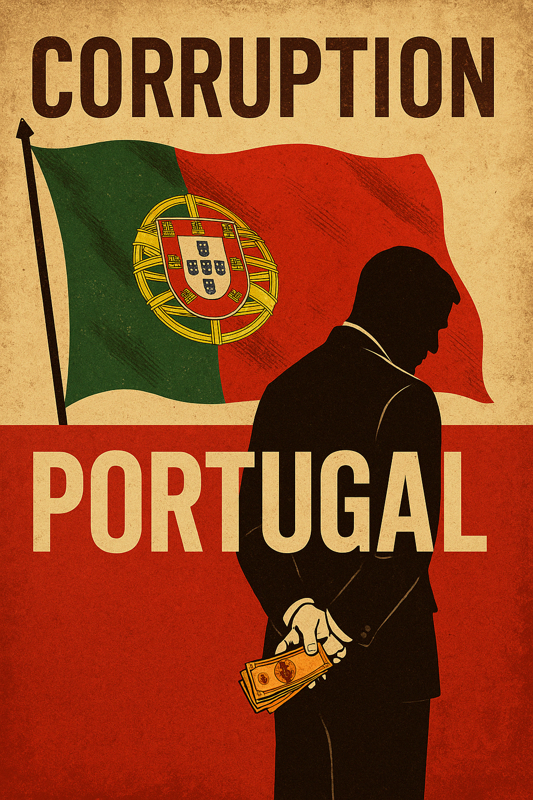

Por Francisco Gonçalves – fragmentoscaos.eu
Há muito que suspeitávamos. Hoje, confirma-se: Portugal não é apenas um país. É um sistema capturado.
A Operação Pactum, com 43 arguidos — incluindo um diretor do Banco de Portugal e buscas a empresas como a MEO — é apenas mais uma página do grande livro negro da corrupção nacional.
Carlos Moura, o nome que agora emerge, é o símbolo perfeito da podridão institucionalizada. Antigo quadro da Portugal Telecom, hoje sentado no topo tecnológico do Banco de Portugal — a entidade que deveria garantir a integridade do nosso sistema financeiro. Eis o retrato da promiscuidade: regulador e regulado são apenas dois lados do mesmo conluio.
A operação, conduzida pela PJ e o DCIAP, revela o que todos sabemos mas poucos dizem:
o Estado português está colonizado por interesses privados, mafiosos e partidários.
Quem devia proteger os cidadãos está, afinal, comprometido até ao pescoço com os esquemas que nos empobrecem e desacreditam.
O nome Pactum não foi escolhido ao acaso. É um pacto — entre elites. Entre banqueiros, políticos, administradores, fornecedores e operacionais do silêncio.
Um pacto onde:
A MEO, sucessora do império tentacular da PT, volta ao centro do palco. As mesmas personagens. Os mesmos esquemas. Os mesmos resultados: milhões desviados, serviços degradados, e a justiça a correr atrás do prejuízo com passos de caracol e rédeas curtas.
Portugal já não é só um país pequeno e pobre. É um país onde a ética foi privatizada, a confiança foi hipotecada, e a democracia está refém de um polvo tentacular.
É este o “Estado de Direito” que nos vendem? Onde os dirigentes se tornam arguidos e os arguidos continuam dirigentes?
Onde os partidos se acusam mutuamente enquanto trocam lugares, favores e silêncios?
Porque enquanto o povo dorme e o sistema saqueia, há quem escreva. Há quem recorde. Há quem resista.
Lutar é um dever. Resistir é um ato de amor à verdade. E escrever… é não permitir que o silêncio se torne cumplicidade.